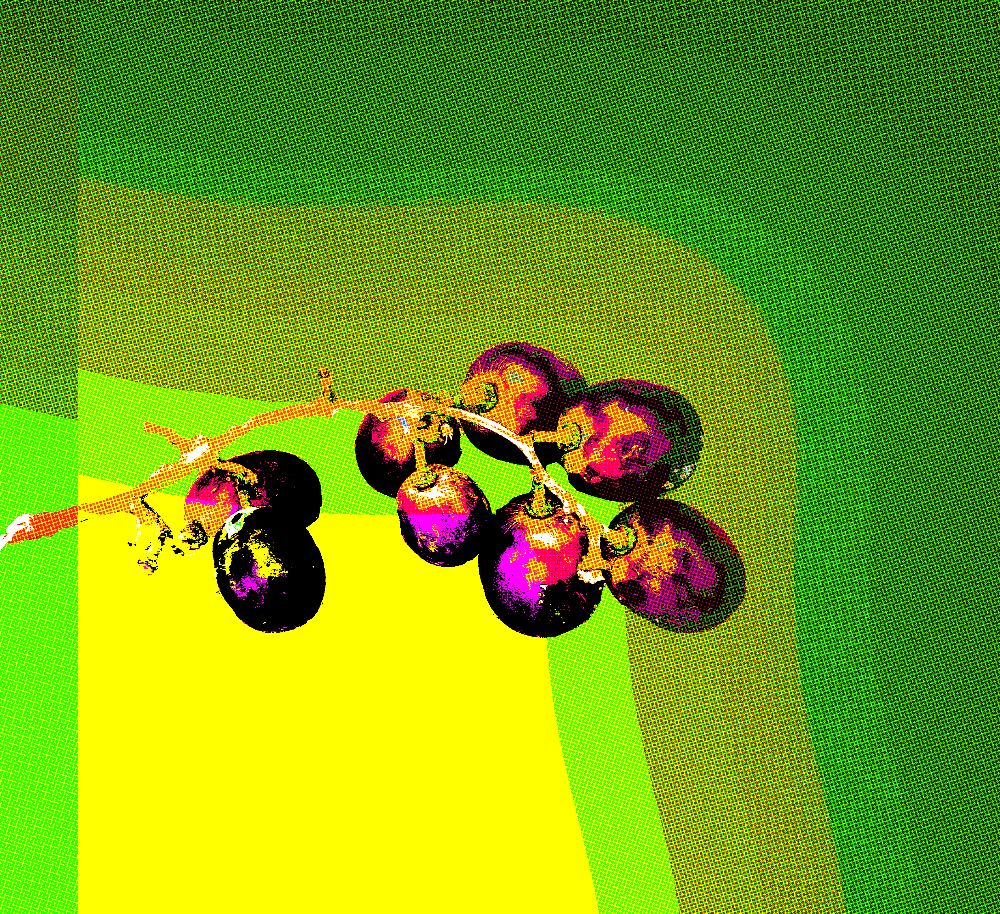

helo world !!!
go to the new pageto the handmade site!!
The hand has become increasingly less present in the web as we know it today. Websites are automated or built from templates, and the knowledge of how to make a website is relegated to a select few.
It has only gotten easier to learn and make on the web, but the idea and perceived requirements for a website have become so convoluted and arcane that many avoid the subject. This course seeks to dispel these ideas and will emphasize the hand-quality of websites by developing an understanding of the best practices, language, history, and present context of the web. We will examine the space of the web at large and explore and challenge what a website is and can be with the hopes of reclaiming an important creative space.
